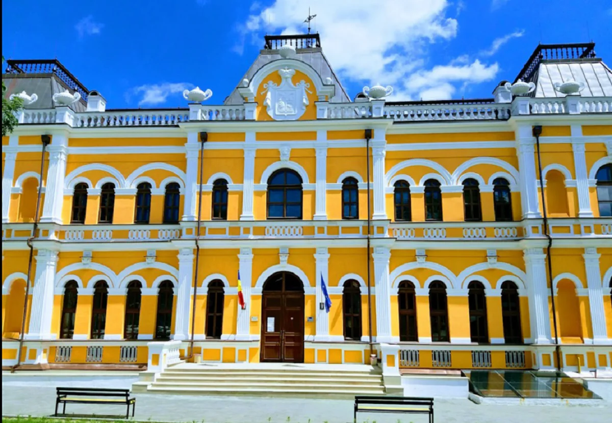

Conacul Manuc Bei
Conacul lui Manuc Bei este amplasat în orașul Hîncești din partea central-vestică a Republicii Moldova; și include următoarele edificii: Palatul lui Manuc, Casa vechilului, Clădirea contesei, Castelul de vânătoare, Turnul de veghe ș.a.
Cu toate că conacul îi poartă numele, acesta însă nu a fost ridicat de către diplomatul și negustorul de origine armeană Manuc Bei Mîrzaian, așa cum se vehiculează, ci de către urmașii săi,fiul Murat, care a demarat construcția vilei boierești, și nepotul diplomatului, Grigore, care a încheiat lucrările respective.
Istoria
Construit la începutul secolului al XIX-lea, în anul 1816, Conacul Manuc Bei este un monument de arhitectură aflat în raionul Hâncești din Republica Moldova, care are o istorie bogată.
Istoria Conacului Manuc Bei începe cu negustorul și diplomatul Manuc-Emmanuel Mîrzoian, armean de naționalitate, care s-a mutat din orașul românesc Sibiu la Chișinău și a cumpărat moșia Hâncești.
Construcția palatului a durat mai bine de trei ani, iar a întregului conac aproape un secol. Domeniul conacului constă, de asemenea, din Castel Vânătoresc, casa administratorului imobilului (Casa vechilului), locuințe pentru servitori, grajduri, bucătăria de vară.
Astăzi însă, conacul include doar câteva edificii: Palatul lui Manuc, Casa vechilului, Clădirea contesei, Castelul de vânătoare și Turnul de veghe.
Palatul lui Manuc
În anul 1881, celebrul arhitect Alexandru Bernardazzi a fost cel care a proiectat și a construit Castelul vânătoresc, înconjurat de turnuri, de grădina de iarnă și de un mic parc.
Cercetătorii cred că dinspre palat pornesc tuneluri lungi, unul dintre care ar străbate, cică, întregul Hâncești. Câteva dintre aceste galerii au fost dezgropate, porțiunile acestor pasaje subterane servindu-le drept beciuri locuitorilor din Hâncești.


Fiind trecut prin timp, conacul a avut mult de suferit. În anul 1944 castelul a fost grav avariat în urma bombardamentelor din timpul celui de-Al Doilea Război Mondial, după care conacul a trecut în proprietate sovietică, fiind restaurat și transmis în gestiunea Colegiului de Construcție din localitate.
Însă, după cutremurul din 1986 conacul a fost extrem de avariat și Colegiul a fost mutat în altă clădire.
Daune aduse palatului principal în timpul celui de-Al Doilea Război Mondial
Restul clădirilor continuau să se distrugă, deși în anul 1993 moșiei i-a fost atribuit statutul de monument de arhitectură. Abia în anul 2011, moșia a fost înconjurată de un zid de beton, deși pe teritoriul acesteia se putea ajunge cu ușurință.
Clădirea palatului arăta distrusă și extrem de avariată, în special fațada, același lucru se putea spune și despre Casa Vechilului și casa lui Ioniță Iamandi.
Acest monument de arhitectură nu era decât niște construcții ruinate care nu avea practic nici un viitor.

Restaurarea conacului lui Manuc Bei
Efectuarea unor săpături temeinice pe teritoriu în anul 2013 a constituit motivul primordial pentru lucrările de restaurare a moșiei, care au început în anul 2014 în urma unui proiect de finanțarea din partea Uniunii Europene.
Conform planului, lucrările de restaurare trebuiau finalizate în august 2015, dar acest termen a fost deja de două ori amânat din cauza dificultăților neprevăzute în subsolul clădirii și descoperirea, în urma săpăturilor, a unor noi obiecte, în special, a unei băi turcești, precum și din cauza faptului că partea moldovenească nu a onorat totalmente finanțarea conform contractului.


Lucrările de renovare au durat aproape doi ani, însă rezultatul a fost pe cinste.
Palatul a fost renovat în stil renascentist, păstrând luxul și eleganța în care a trăit familia renumitului boier. În palat au fost restaurate dormitoarele, sălile pentru petreceri, sufrageriile și birourile.
Mai multe obiecte de mobilier au fost aduse din Odessa, unde Manuc Bei mai avea un palat. O altă parte din mobilier a fost confecționată în Italia, după câteva modele originale.
Pentru a reda din nou în detalii stilul autentic perioadei secolului XIX, au muncit peste 60 de specialişti, atât meșteri din Moldova, cât și din România.

Astăzi Conacul Manuc Bei se bucură de zeci de vizitatori zilnic, din toate colțurile țării, dar și de peste hotarele acesteia, iar autoritățile speră că monumentul va deveni una dintre cele mai atractive destinaţii turistice din țară.